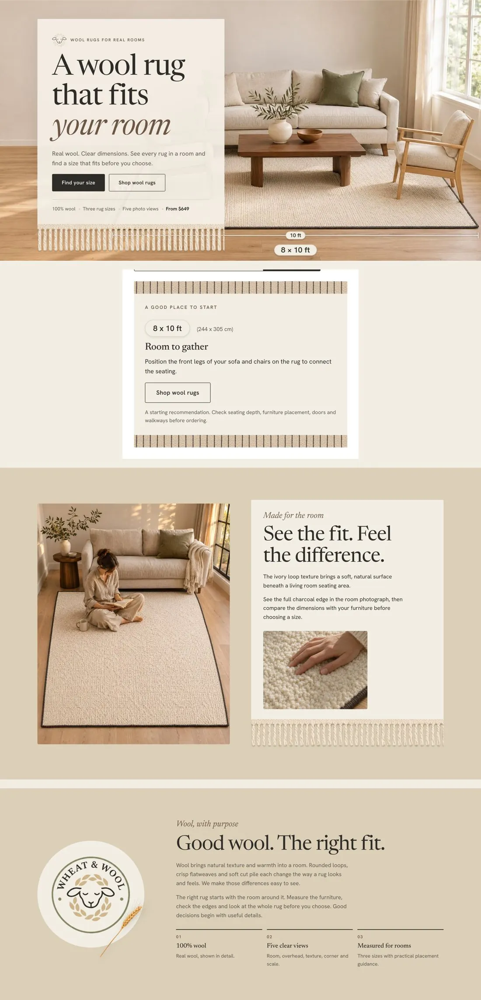
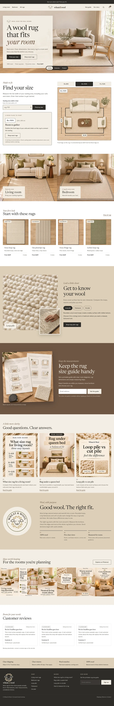
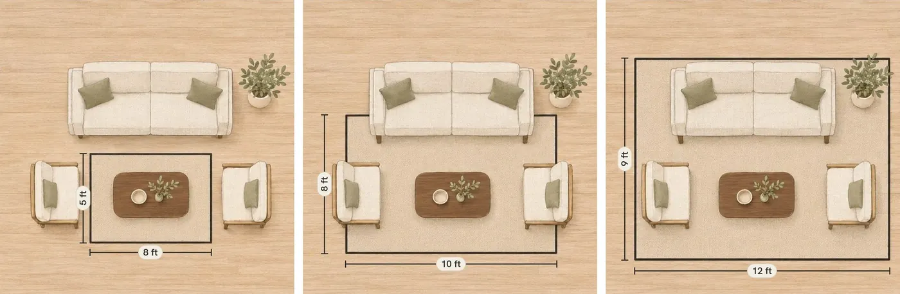

Wheat & Wool
A wool rug shop for warm, natural rooms. The hardest part of buying a rug online is picking the size, so I built the brand, the site design and the Pinterest launch around helping shoppers find the rug that fits.


Help shoppers pick the right size
- A calm, natural brand that feels as warm as the wool itself.
- A size finder and clear diagrams, so shoppers know a rug fits before they buy.
- Simple ways to compare textures like loop pile and cut pile.
- A Pinterest launch built on the questions people search before buying a rug.
The brand stays quiet so the rugs and rooms lead. Every page and pin points back to one job: help a shopper feel sure about size and texture, then send them to the right rug.
Oat, wheat and walnut, with a woven feel
A warm neutral palette, a classic serif, and details borrowed from the rugs themselves: a pinstripe band, fringe trim and a wheat sprig.

A home page built around finding your size
A size finder right under the hero, shop by room, texture comparisons, a printable size guide for the email list, and buying guides that answer the big questions.



Size guides that answer real searches
Pins that answer what size rug, how to measure and which pile to choose, plus calm room ideas people save for later.


See what else I've built